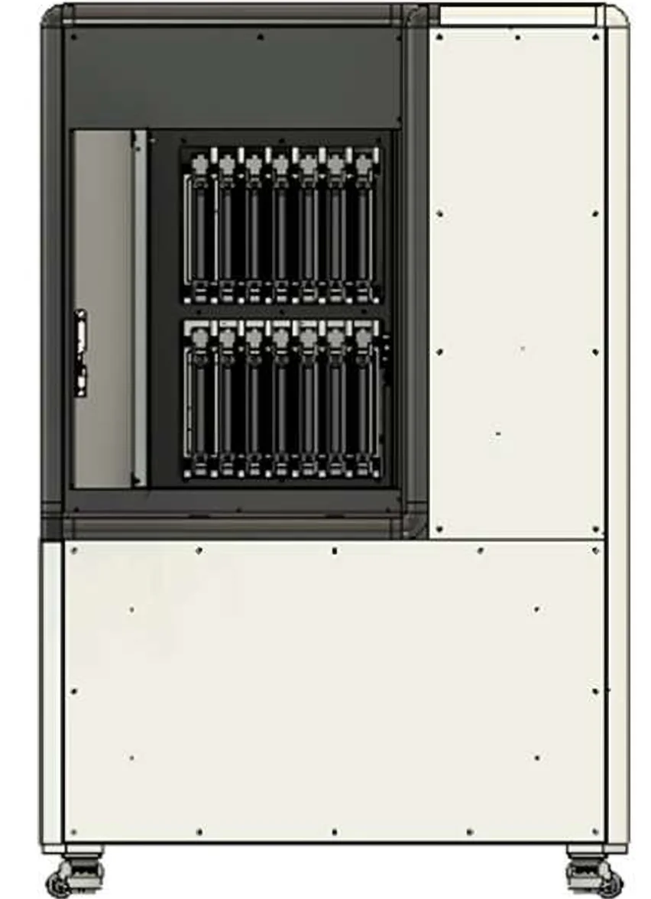
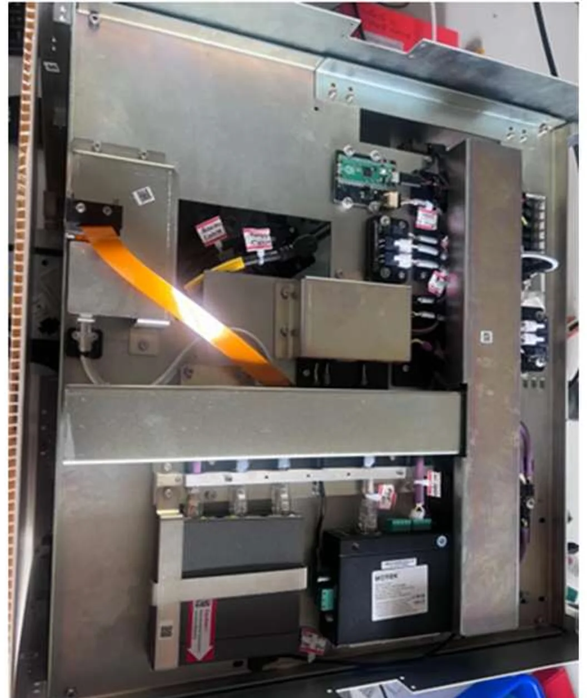

Three imaging machines at Morphle Labs: a blood scanner I took from concept to QC pass in five months, the slide loader of a 420-slide scanner, and a new electrical architecture for the MorphoLens 6.
Role
R&D engineer and product owner
Where
Morphle Labs (YC20)
When
May 2024–May 2025
Machines
MorphoLens MH1, MorphoLens 420, MorphoLens 6
12345678
ABCD
ABCD
12345678
AMORPHOLENS MH1
BMORPHOLENS 420
CMORPHOLENS 6, ELECTRONICS BAY
THREE MACHINES FROM MORPHLE LABS, VIEWS FROM CAD. NOT TO SCALE. DETAILS A TO C BELOW.
5 monthsfrom concept to QC pass for the MorphoLens MH1
1 µmplanar motion held on the MH1 stage, for 100× imaging
3 monthsto design and assemble the MorphoLens 420's multi-axis slide loader
15 → 3field electrical failures a month on the MorphoLens 6
A
DETAIL A · PRODUCT OWNER AND LEAD DESIGNER
MorphoLens MH1, a blood scanner in five months
The MH1 is a blood scanner. I owned it as product owner and lead designer, from the first concept to passing quality control in five months.
The hard part was the motion. A sharp image at 100× magnification needs the slide to move in a plane held to 1 µm. I designed a custom horizontal planar axis on a roller-bearing system, with three-point plane tuning on each motion axis.
SPECIFICATION, VIEW A
ROLE
PRODUCT OWNER AND LEAD DESIGNER
CONCEPT TO QC PASS
5 MONTHS
MAGNIFICATION
100×
PLANAR MOTION
WITHIN 1 µm
PLANAR AXIS
ROLLER BEARINGS, THREE-POINT PLANE TUNING ON EACH AXIS
B
DETAIL B · MECHANICAL DESIGNER
MorphoLens 420, a loader for 420 slides
The MorphoLens 420 is a high-throughput scanner that handles 420 medical slides. I designed its loader mechanism and the slide cartridge, and designed and assembled the multi-axis loader in three months.
Two things made it hard. The loader needs three linear axes and one rotary axis to move slides inside a tight space. And the slides have to stay accurately placed for the loader, even though users often take the cartridges in and out by hand.
A counterbalanced vertical axis with a safety brake carries the load against gravity.
Magnets and a ball-and-socket joint lock each cartridge in place against the loader.
The handle
Doctors found the slide cartridges awkward to put in and take out of the rack. I set two rules first: the cartridge must be handled with two hands, and placing or removing it must take little force. Magnets now position and align the cartridge. In place of an ordinary handle I designed a cup and a block: two fingers go into the cup and grip the block, the cartridge pivots about it and hangs level, and the slides come out easily. Wrists only bend so far, and this grip asks much less of them than the old handles did.
SPECIFICATION, VIEW B
ROLE
MECHANICAL DESIGNER
CAPACITY
420 SLIDES
LOADER AXES
3 LINEAR, 1 ROTARY
VERTICAL AXIS
COUNTERBALANCED, SAFETY BRAKE
CARTRIDGE LOCATION
MAGNETS, BALL AND SOCKET
LOADER, DESIGN TO ASSEMBLY
3 MONTHS
CARTRIDGE HANDLING
TWO HANDS, LOW FORCE, CUP-AND-BLOCK GRIP

Front view, door open, with the slide cartridges in place.
C
DETAIL C · PRODUCT OWNER
MorphoLens 6, rewired for the field
The MorphoLens 6 was already in the field, and its wiring was the weak point: unreliable, hard to reach for maintenance, and fatiguing on the moving axes. After-sales support kept seeing the same cable failures. I redesigned the machine's electrical architecture.
Every cable path modelled in CAD to check bend radii and routing, so the CAD model became the source of truth for the wiring.
IGUS cables and energy chains on the moving axes, and strict assembly procedures for the wiring.
A mandatory routing path and minimum bend radius for each cable, and a strain relief designed for each cable type.
A grounding scheme against induced noise, and custom snap-fit clamps that hold the cables and relieve strain.
Field electrical failures fell from 15 a month to 3.
FIELD ELECTRICAL FAILURES PER MONTH, MORPHOLENS 6.

As built. The same electronics bay as view C, after the rework.
The rest of the job
Ran design verification and validation on prototype and pilot machines, root-caused recurring failure modes, and wrote the findings into standard DFM and assembly guidelines.
Specified and integrated off-the-shelf parts (linear roller bearings, rail blocks, special fasteners, cameras and Raspberry Pi computers), resolving fit, mounting and cable routing against the structure around them.
Worked with domestic and international vendors and with purchasing to close manufacturability issues, specify heat treatment for hardened gears and shafts, and hold delivery dates.
Gave remote and on-site field support as product owner for the MorphoLens 6, the MorphoLens 1 and custom variants.